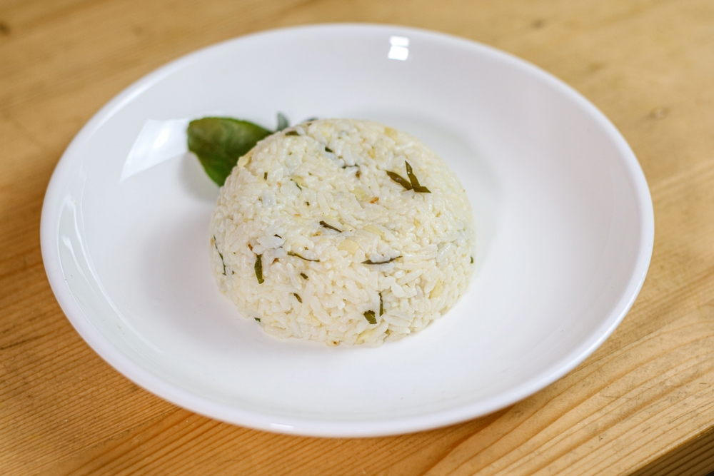

Lime Leaves Rice

Description
It turns out that amongst all of the rice cooking variations, we can mix
rice and lime leaves, and it tastes and smells really good, check this out!
Ingredients
- A bowl of rice
- 10 lime leaves
- A clove of garlic
- 2 tablespoon of margarine
- Enough salt and MSG
Steps
- Heat the pan with margarine
- Add garlic to the pan and wait until it smells good
- Then add the sliced lime leaves to the pan and wait for a minute
- Put the rice into the pan and mix it well
See other recipes!